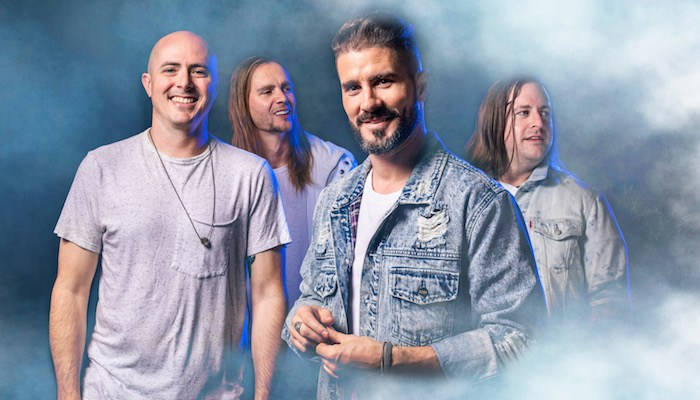
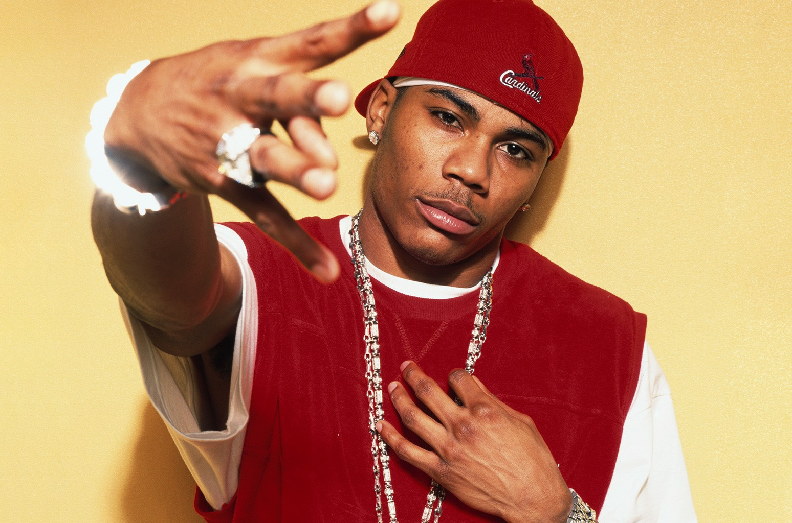

Chuck Berry, the "Father of Rock and Roll". Born in St. Louis in 1926, Berry was a pioneer in the world of rock and roll. With his constant innovation to the genre, today's musicians still try to put inspiration from one of the greatest to ever pick up a guitar. His sound was often imitated, but never replicated.
Greek Fire was formed by previous members of another St. Louis-made band, Story of the Year, in 2008. Their unique blend of modern and throwback sound makes them a truly intriguing band to listen to. The song abbove, titled "Top of the World", is one of the groups biggest hits and was featured in the Disney film "Big Hero 6".
Cornell Iral Haynes Jr., better known by his stage name Nelly, is the most revered celebrities to come out of the Lou. The fouth best-selling rap artist in US history was not born in St. Louis, he moved to the city when he was just 3 years old. One of his biggest hits, "Country Grammar" (which is featured above), has one of the most prideful lyrics to a hometown in music with, "I'm from the Lou and I'm proud!".